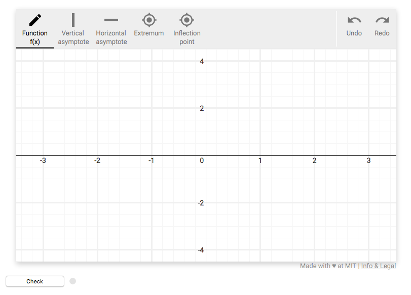

How To Test Your Grading Scripts Locally
The SketchResponse tool is designed to be used as a web application so when it is properly installed the Sketch Tool and Grader Lib will be hosted on a server somewhere. However, while you are designing and implementing a grading script for a particular problem, it is very convenient to be able to test it on a locally running version of the SketchResponse tool. This allows you to get immediate feedback on how well your grading script works without having to upload anything to your server.
Flask
The local testing server is implemented using Flask. If you do not have flask you will need to install it, which is easily done by running the command:
$ pip install -r requirements.txt
Running the server
Building the sketch tool distribution
Before you can run the local server, you need to build a local copy of the sketch tool. If you have already done this and you have not modified the sketch tool in the interim you can skip this step. Otherwise, follow the instructions here for details on building the sketch tool distribution.
Start the grader local server
To run the local server, make sure the grading script you are testing is in the grading_scripts directory. Then run the following command from the repository root directory:
$ python server.py
You should see a message telling you that the server is running on http://localhost:5000.
Testing your script
Open your web browser of choice and put the following in the url bar, where
$ http://localhost:5000/<grader script name>
You will now see a locally running copy of the SketchResponse Sketch Tool using the configuration options you defined in your grading script. You can use it to draw test input for your grader script and press the 'Check' button in the bottom left corner to run your grader on the functions you have drawn.
